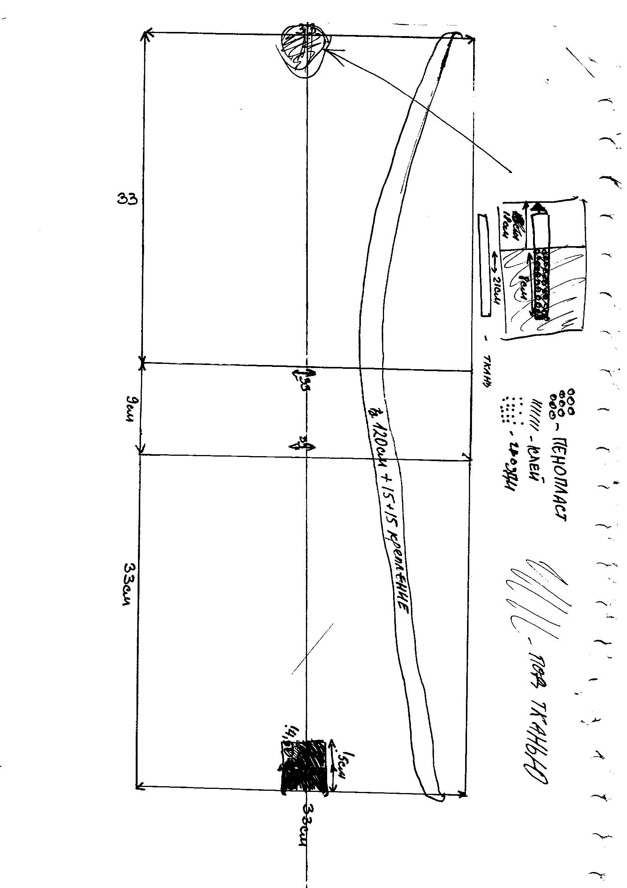
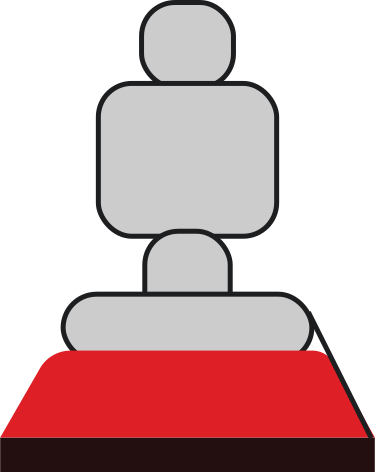
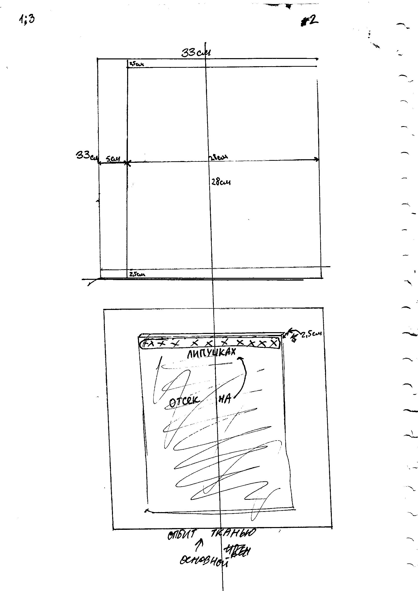
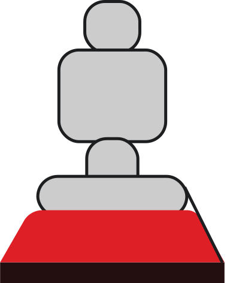

Date: October 2015

IBody

Date: October 2015
Date: October 2015
IBody
Date: October 2015
This prototype I created in 2016 year, first time.
I did prototype of this smart clothes.
This was enthusiastic, I was walking on the streets, and all people were iboching me.
I ran with this Ibody, may draw, write or iboch videos on walk. It was good thing – Ibody. Some people tried to wear it and they said that it was really cool. I could not do it from good materials but I did it from all materials that I could find.
My Ibody is useful in over 50 ways. I have about 5 scheme and plan of creating. About 100 notes for upgrade it. I spent for these prototype 0 rubles. Because all what I find I find free on street and friends. There were polymers after building process or some planks from street. I created this prototype 3 weeks. First model I created for first 5 days.
Now I may think that here may be design collection of different.
It is smart clothes. In my I body, I have chair that dropped mechanically, umbrella and table. Some of next creations may be different and have different tasks. I want to make this like product and company or work with other to create it for their clients.
I want to have practice in making smart clothes.
I want to make humans better and in way of being more efficient for yourself.
I think that it will be big project and first Ibody may be from 300 to 500 $
The process of growth it can be much higher like 100 000 – 10 000 000 for 1 product, when u sell it.
I think that company may start like start up. From 10 000 to 300 000 $. This will be real factory of Ibodies that have marketing and small factory.
I think that company may start having benefit after first 5 – 24 weeks.
At the result of this calculating.
1 body may cost from 120 – 1000 $ (for usual branding)
Body that will be in exclusive linear from 8 000 – 500 000 $.
Investment to start business starts from 9 700 – 441 000 $.
Time for making benefit from business 4 – 34 weeks.
I think we may connect with Apple.
There are description about my project